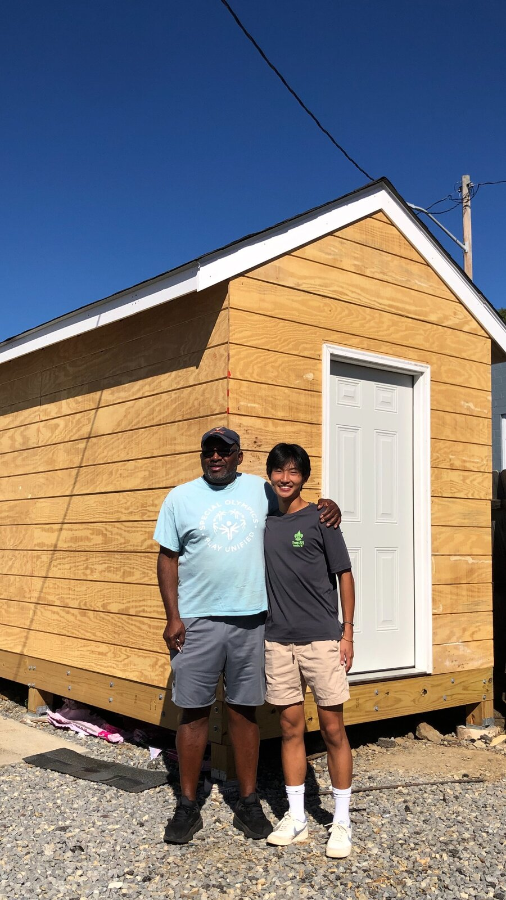
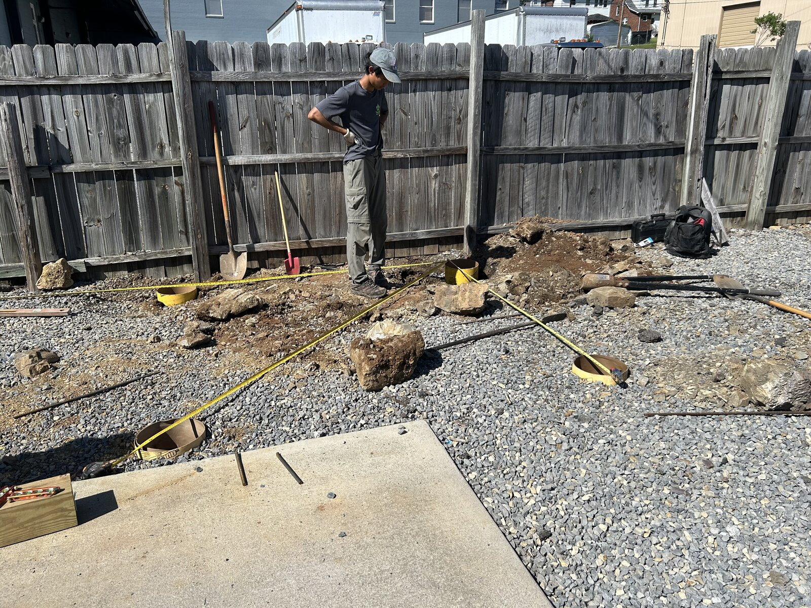
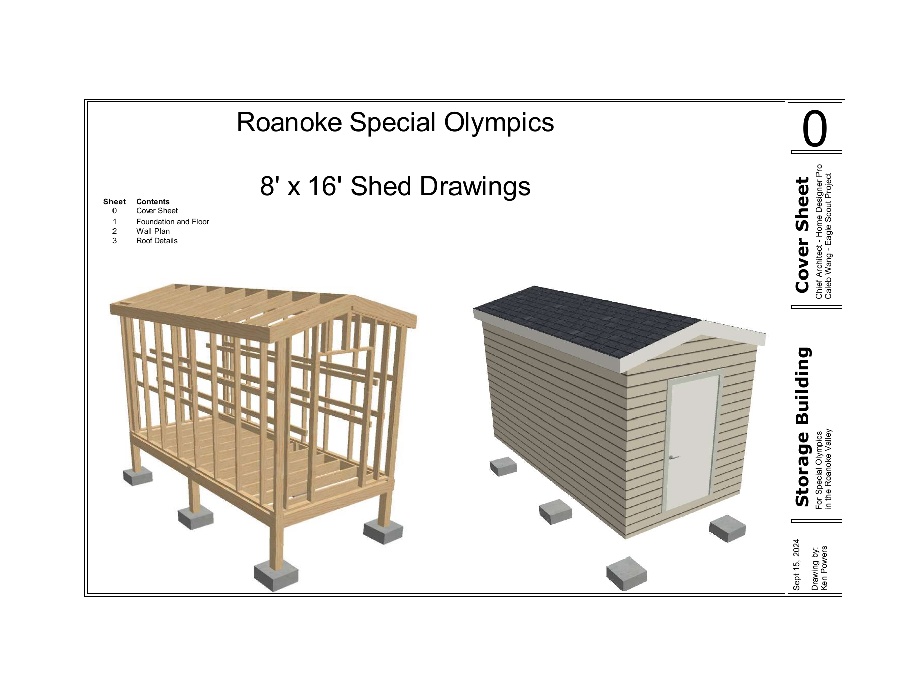
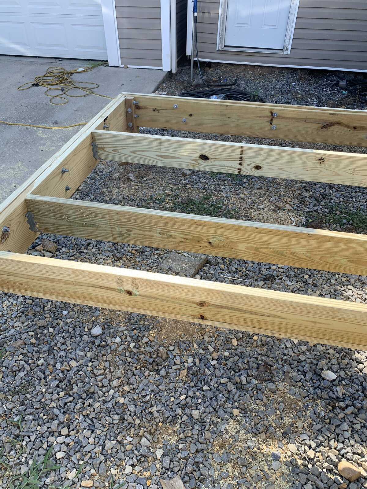
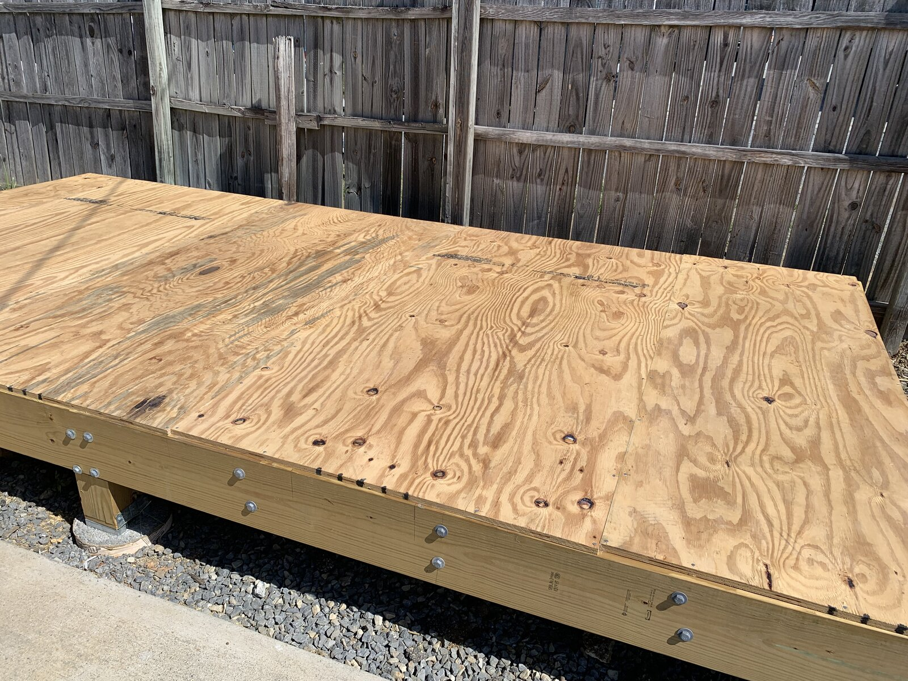
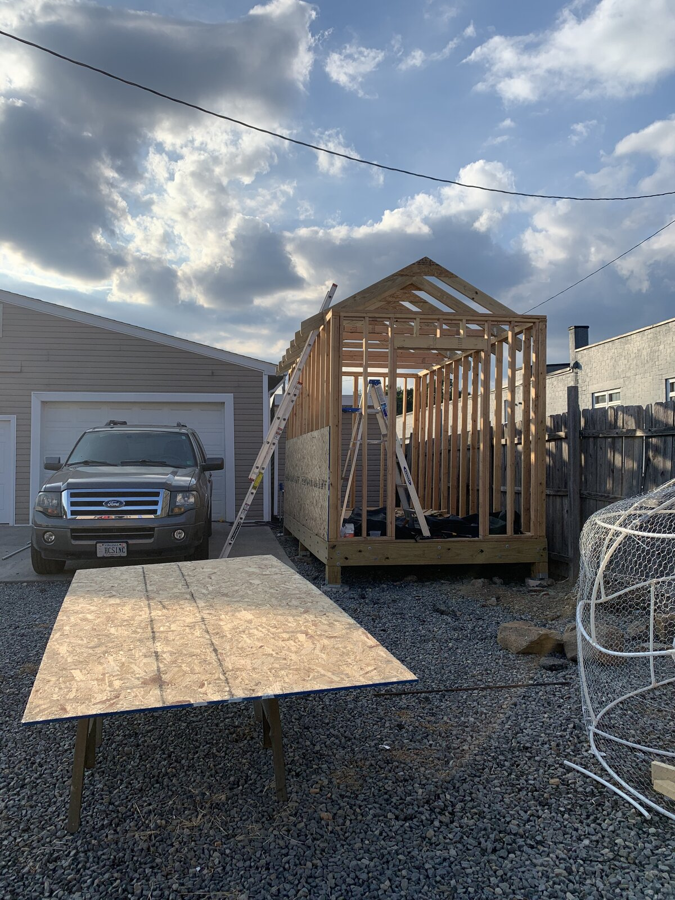

Away from the keyboard / A project journal
Eagle Scout
Storage Shed
An 8×16-foot shed, a place for equipment, and a project for the local Special Olympics community.
- Eagle Scout service project
- Special Olympics
- 8 × 16 feet
Journal in progress. Draft text for now. Select any photo for a closer look.


01 / The idea
Room for something useful.
For my Eagle Scout project, I planned and built an 8×16-foot storage shed in collaboration with Special Olympics. The purpose was simple: create a dedicated place to store equipment for the local program.
This journal is a place to collect the story behind the shed, from the first plans to the finished structure. The small decisions along the way deserve a spot here, too.


02 / The build
From a plan to a place.
A finished shed tells only part of the story. I want to use this space to look back at the work that went into it: planning the structure, bringing the pieces together, and seeing the project take shape.
These photos fill in what a short project description can't: the exposed floor joists, the plywood decking, and the walls and roof beginning to take shape.


03 / Looking back
More than the finished shed.
At the center of this project is a practical purpose: equipment storage for Special Olympics. Alongside the finished photos, I want to remember what it took to get there and the people who helped along the way.
A few lessons and the full story to come.
— Caleb